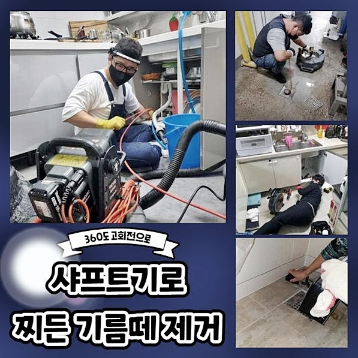
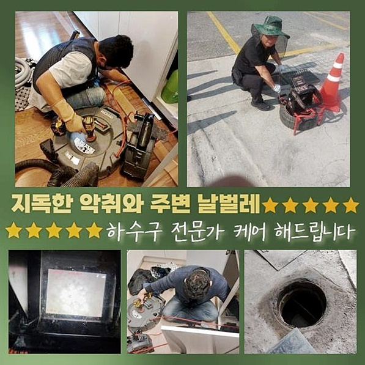
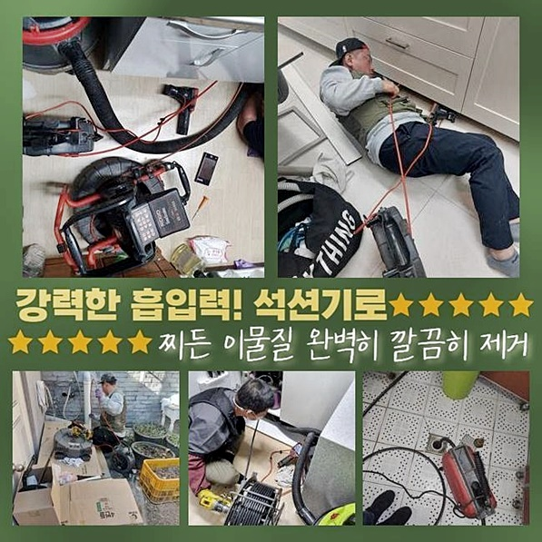
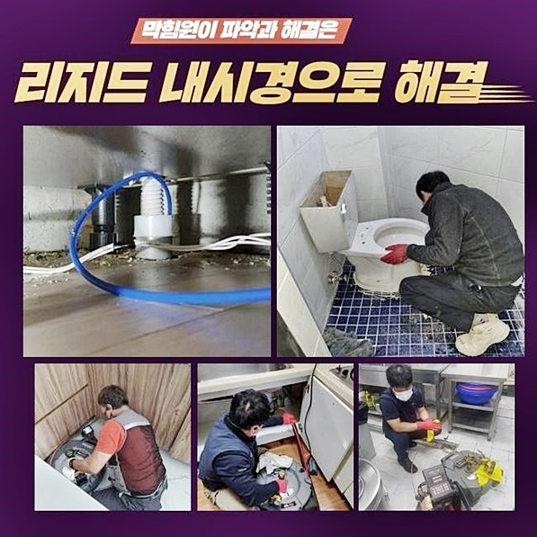
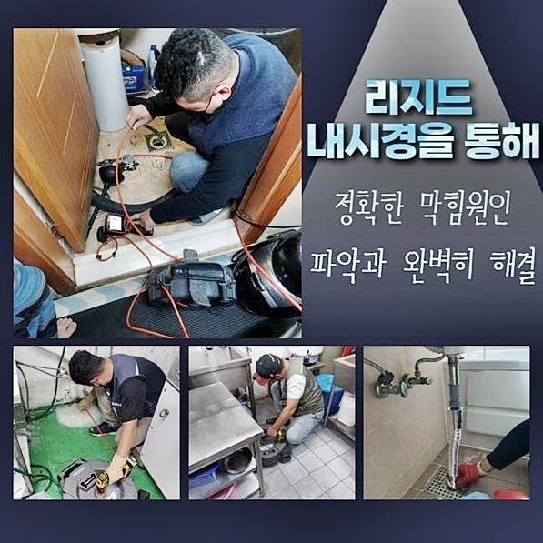
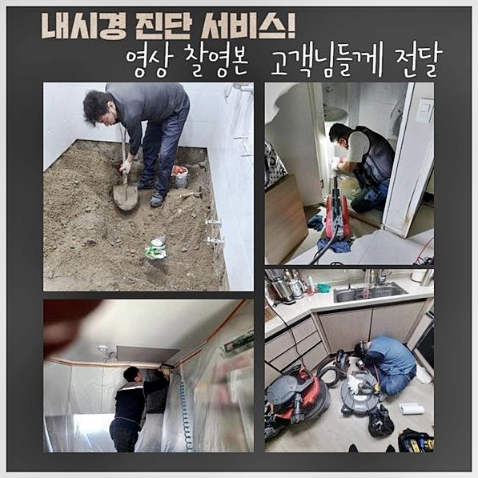
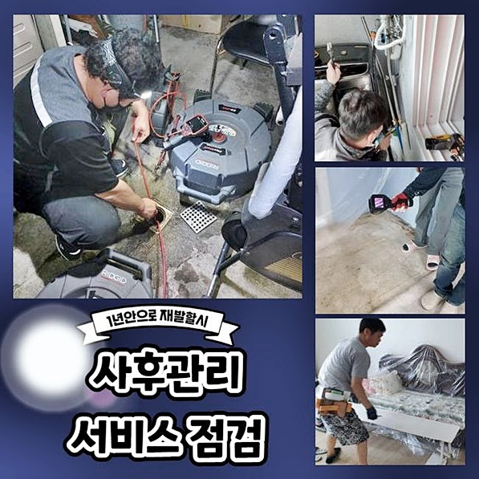

🏠 수원 매교동대변기역류 인계동 악취차단 배관막힘
수원 싱크대막힘 전문 시공 후기

📋 작업 개요
- 위치: 수원
- 서비스 유형: 싱크대막힘, 변기막힘, 하수구막힘, 배관막힘, 역류해결, 뚫는업체, 배관청소, 고압세척, 배관보수, 악취차단
- 작업 일시: 2024. 9. 12. 19:50
- 업체명: 하수구수사대 (010-5615-2118)
🔍 문제 상황
수원 매교동대변기역류 인계동 악취차단 배관막힘
멀쩡하게 기능이 돌아가던 곳이 갑작스레 중지된다면 빈자리가 크게 느껴지고 불편감이 일시에 몰려올 수 있습니다
집안에서 생활하수를 단 몇시간을 못 쓰더라도 많은 편의성을 잃게 됩니다
오늘 함께 공유할 방문드렸던 막힘 현장에서도 심각한 고민을 안고 계셨어요
사방으로 확산된 구릿한 악취 증세가 극성이라 하신 건으로 물론 수돗물도 예전처럼 배출되지 않기도 하지만 얼마전부터 유발된 악취문제가 메인이라고 빠른 보수가 필요한 상황이라 호소하셨어요
하수구의 막힘이나 고장은 조속히 수선하지 않는다면 더 심각한 사고까지 형성하게 됩니다
많은 케이스들을 미루어보면 서서히 물의 폐수속도가 느려진다면 사용방법의 미숙으로 인한 사안이라고 추정하게 됩니다
물기가 깔끔하게 빠지지 못하고 혼탁하기까지 하다면 우선 개수대의 물과 오염물질을 뽑아내야만 내부 상황을 살필 수 있습니다
싱크대에 오염된 찌꺼기가 고여있다보니 여러 어려움을 겪으셨을 것이며 수습이 안되어 답답하셨을테니 다시 쾌적하게 시설물을 시설물을 쓰실 수 있게 책임지고 손봐드려야 했습니다
하수구 곤란은 불현듯 찾아오며 새벽 시간대에 막히면 상시 처리해 드려야 하며 언제라도 듬직하게 지원해드려야 합니다
싱크대 주변부만 한정되지않고 전반적으로 냄새가 끔찍하게 풍겨다는 수준이라서 얼른 수습을 들어가서 보완해드리고자 했습니다
하수를 배출시켜 보았는데 물의 높이가 높아지기만 할뿐 흘러가지 못했고 치솟는 증상까지 함께 일어났더라고요
타업체들도 가볍게 접근했다가 고난도 상태라고 판단돼서 회피하고 돌아갔어서 돌고 돌아 저희측에게 문의를 취해주신 겁니다

🔎 원인 분석
💡 전문가 진단: 정밀 진단 장비를 사용하여 슬러지의 고착 여부를 판명하고 타격/세척 작업을 실시했습니다.
저희의 오랜 노하우를 기반으로 충분히 역할을 해냈기에 위기에 봉착했던 상황을 유연하게 이겨낼 수 있었던 것이죠
말 없이 진행하지도 않으며 막힘의 동기도 잘 찾아내고 야무지게 진행을 해줬던 점이 만족한 반응을 보이셨네요
합리적인 비용과 후속 처리도 해주는 것이 긍정적인 부분이라고 칭찬 메시지를 보내셨네요
구체적인 오류 인자를 관측하여 빠르면서 성과가 좋을 돌파구를 발견해 낼 수 있었어요
보편적으로 석션이나 샤프트를 반복해서 운용한다면 표면상에서 가장 큰 문제이던 통수곤란은 해결이 됩니다
진공으로 빨아당기는 석션기로 세정을 해나가는 이유는 재발 방지를 위해서도 긍정적입니다
약간의 오염원이 있어도 뭉쳐가면서 덩어리가 될 가능성이 농후합니다
재발 시 시간과 비용의 손실도 무시 못하지만 고객님이 받는 스트레스도 똑같이 재생될 수 있으니 한 번의 시도에 끝내야 합니다
배관로에 기름 때들이나 오염원인이 층을 이뤄가면 물이 흘러가는 경로 자체가 차단되어 버려서 난감함을 겪게 됩니다
이처럼 끔찍한 사태를 체험하고 싶지 않다면 적절한 기간마다 하수구를 눈여겨 보면서 점검받아야 해요
배관을 보는 카메라를 동원해서 슬러지로 막힌 현황을 관찰할 수 있어요
슬러지가 만들어지는 원인은 정확한 사용 기준을 새기며 시설물을 쓰지 않아서 벌어지는 것입니다
이만하면 넘어갈거라 기대하여 끈적한 양념이나 음식물을 물에 섞어 내보내면 결국엔 막히고 마는 것이죠

🔧 작업 과정
결함이 곧장 눈에 보이진 않더라도 찌꺼기들은 가장자리에 붙기 시작하여 지속적으로 몸을 불려나가고 결국 마비를 부릅니다
찌꺼기로 속이 채워진 모습을 보완하기를 원한다면 회전력의 샤프트를 적용하는 게 이롭습니다
사슬 형태의 포인트의 힘으로 오랜 세월 쌓여오다가 접착력도 강화된 물질들을 갈아줄 수 있기 때문이죠
해당 장비의 말단이 곡선 쉐이프라서 오염원을 손쉽게 파쇄하여 꺼내줄 수 있습니다
이와 같은 과정으로 남김 없이 처리해서 투명한 물이 흐르도록 복구시키는 겁니다
감지하기 힘든 파이프라인의 어디가 막혀버린건지 세부적으로 계속해서 보고를 드려서 마음이 편하다고 하셨어요
하부장의 주름배관을 분리해서 석션을 작동시켜서 오물을 빨아당겼는데 고여있던 물이 그대로였어요
스케일링을 완수하고 나니 그제서야 고인 물들이 외부로 이동하기 시작했네요
겉으로 보이는 찌꺼기들을 약간만 없앤다고 아예 막힘이 나아지는 것은 아니니 딥 클리닝이 필요합니다
뚫음작업은 상상 이상의 잠복된 문제까지 발현되니 예리하게 관찰해야 합니다
든든한 장비력은 물론이고 경험을 살려서 파이프 속의 방해요인을 서서히 자취를 감추게 만들었죠
보편적인 하수구 청소를 위해서는 플렉스 샤프트나 석션기 관통기 등 특수 청소 도구로 파이프를 깔끔하게 변화시킵니다
이물질이 자리한 포인트는 몇 군데만 그렇지만 전반적인 흐름을 내려면 고압세척도 실시해야 합니다
석션기기를 가동시켜서 관로 내의 이물질들을 차례로 없애고 나서 고압 세척방식으로 깨끗한 배관 환경을 선사할 수 있습니다
카메라를 통해 배관의 속사정을 보니 각종 잔해들이 꽤 다량이 쌓여있어서 여기에 가로막혀서 계속 물이 누적되는 상황을 인식하게 되었습니다
표면 쪽만 처리해서는 효과가 없을 듯 해서 결함이 없도록 조성하는 것이 필요하다는 판단을 내렸습니다
저희의 촬영 도구로 내측의 탐사하는 공정과 뚫어나가는 과정은 파이프에 대한 이해도와 스킬이 반드시 투입되어야 해요
다발적으로 막힘이 형성될 수 있기 때문에 한 곳이라도 내버려둔다면 물이 배출되는 정상적인 역할이 확보되기 어렵습니다
당장에 물을 쓸 수 없다는 사실은 단독주택이나 복합상가나 가리지않고 곤경에 빠뜨릴 수 있으니 스트레스도 따라올 것입니다
날이 갈수록 짙어지는 악취는 내부에서 활동하는 모든 사람들에게 가혹한 경험일테니 얼른 손을 써야 합니다


✅ 작업 완료
내부 하수구에서 보통 엿보이는 찌꺼기들을 보면 부패한 음식물 쓰레기나 끈적한 기름 때가 대다수입니다
이와 같은 물질은 빠르게 삭아가면서 어마어마한 악취가 확산되게 하며 곰팡이균의 포자도 날리게 합니다
하수배관이 오염된다면 고객님과 가족분들의 건강을 공격할 수 있는 만큼 도외시 해서는 후회할 일이 생길 겁니다
없어선 안 될 하수구 준설의 불통을 맞닥뜨리게 된다면 전문업체를 물색하셔서 오류를 색출하고 완전히 정상화를 시키는 것이 해답이라고 알려드리고 싶네요
하수구의 설치년도가 오래됐다면 적절한 수단을 고를 수 있는 능력있는 설비 전문가를 발굴하시는 게 필요합니다
아무리 저렴해도 계획 없이 해결을 시도하는 사람이면 물이 줄줄 새어나가는 등의 하자가 형성될 수 있기 때문에 현명하게 결정하셨으면 합니다




⚠️ 주방 싱크대 배관 막힘 예방 수칙
- ✅ 기름기가 묻은 식기나 프라이팬은 설거지 전 키친타올로 반드시 기름때를 닦아내세요.
- ✅ 주기적으로 싱크대 개수대에 뜨거운 물을 가득 받아 한 번에 내려 배관 내부 기름을 씻어내세요.
- ✅ 배수구 거름망을 미세한 필터로 사용하시고 음식물 찌꺼기가 틈으로 새어 들지 않게 관리하세요.
- ✅ 베이킹소다와 식초를 뜨거운 물과 함께 일주일에 한 번씩 부어주면 배관 살균과 막힘 예방에 좋습니다.
💡 핵심 정리
- 확실한 장비 작업(내시경 점검 및 샤프트 스케일링)으로 원인을 뿌리 뽑습니다.
- 작업 후 1년 이내에 동일한 부위 재발 시 100% 무상 A/S 서비스를 보장합니다.
- 서울 · 경기 · 인천 전 지역에 24시간 언제든 긴급 출동할 수 있도록 항시 대기 중입니다.
❓ 자주 묻는 질문 (FAQ)
🚨 수원 싱크대막힘 문제로 고민이신가요?
정확한 원인 진단과 확실한 시공으로 재발 없는 해결을 약속드립니다.
24시간 긴급 출동 | 서울 · 경기 · 인천 전지역 | 1년 내 재발 시 무상 A/S